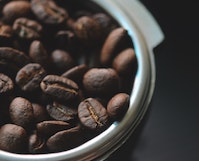

El café de especialidad es, más que un movimiento que un producto, casi una filosofía de como tratar al café en los diferentes procesos que lo llevan a una taza. A diferencia del café comercial, que se produce en grandes cantidades y se enfoca en la uniformidad y la cantidad, el café de especialidad se cultiva y procesa con cuidado para resaltar sus características distintivas.
¿Qué es el café de especialidad?
Su calidad comienza en el origen, en las regiones cafetaleras de todo el mundo. Estas áreas, conocidas por su clima, suelo y altitud favorables, brindan las condiciones ideales para el cultivo de granos de café de alta calidad. Desde América Latina hasta África, Asia y más allá, cada región tiene sus propias variedades de café y perfiles de sabor únicos.
El café de especialidad y el cuidado del medioambiente están intrínsecamente vinculados en la industria cafetera actual. Los productores y consumidores de café de especialidad reconocen la importancia de proteger y preservar los ecosistemas en los que se cultiva este grano. En primer lugar, el café de especialidad se cultiva en armonía con la naturaleza. Los agricultores adoptan prácticas sostenibles, como el cultivo de sombra, donde los árboles proporcionan sombra a las plantas de café, promoviendo la biodiversidad y protegiendo los suelos. Además, muchos productores de café de especialidad se enfocan en métodos de cultivo orgánico y la reducción del uso de pesticidas y productos químicos dañinos. Esto no solo beneficia al medioambiente al reducir la contaminación y la degradación del suelo, sino que también mejora la calidad y pureza del café.
Café y el medioambiente

Otra manera en que el café de especialidad contribuye al medioambiente es a través del comercio justo y directo. Muchas empresas y consumidores optan por apoyar a los productores locales y pagar precios justos por el café, lo que promueve la sostenibilidad económica de las comunidades cafeteras y evita la explotación laboral. Desde BrewHub buscamos promover un consumo consciente, y por eso mencionamos a café circular, la primera red argentina de vasos retornables; una empresa cuyo objetivo es reducir el uso de vasos descartables, optando por sus vasos lilas que cuentan con un código QR para saber donde reciclarlas.